Segmento 1
“Eu começo a campanha e termino amanhã.”
Os fluxos eram longos e quebravam no meio, então o trabalho era abandonado e recomeçado
Solvefy · 2024 a 2026
Marcos Carvalho
Product Design Lead, depois Staff Product Designer
Tudo o que vem a seguir nasceu de ouvir primeiro. O redesign foi a consequência, não o briefing.
A Solvefy vende para times de comunicação: disparo de campanhas, CPaaS, dados de clientes e orquestração de IA. Não começou assim.
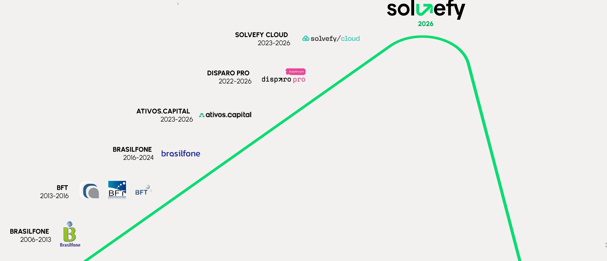
A Solvefy saiu da Ativos Capital com cinco marcas que se sobrepunham. Um cliente que precisava de dois produtos nossos recebia duas interfaces, dois tons de voz e dois caminhos de suporte, para um único trabalho.
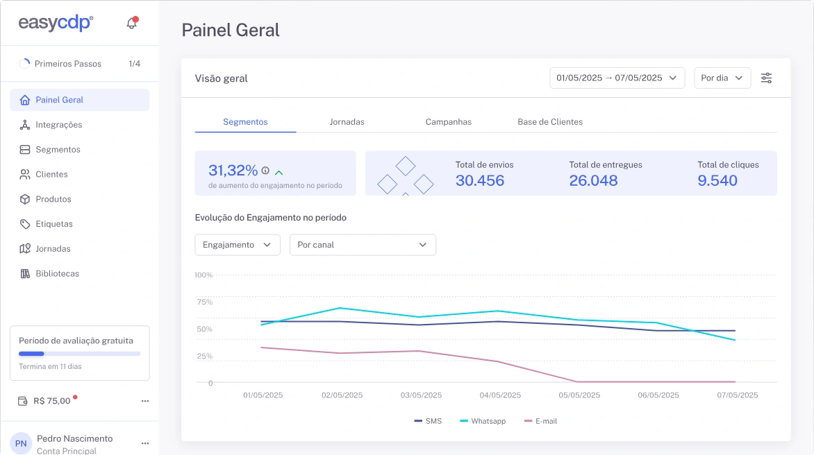
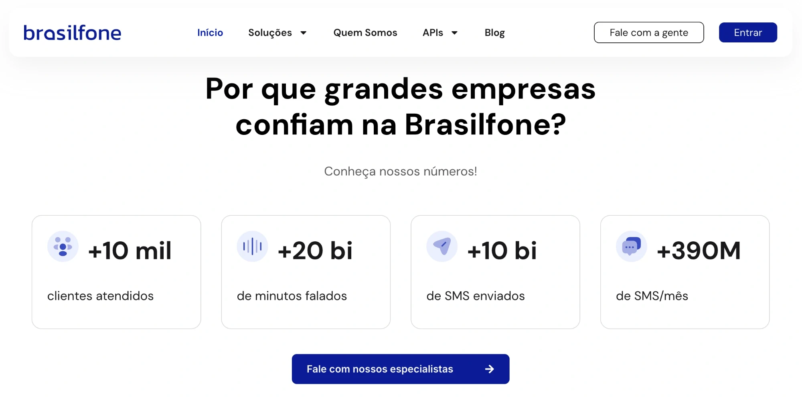
Duas listas, uma causa raiz. Mantive as duas lado a lado o projeto inteiro, para nenhuma decisão otimizar uma contra a outra.
O briefing pedia rebrand. Recusei começar pelo logo, então o primeiro mês foi dos clientes, não das cores.
Definimos as métricas que íamos acompanhar antes de desenhar qualquer coisa.
“Eu começo a campanha e termino amanhã.”
Os fluxos eram longos e quebravam no meio, então o trabalho era abandonado e recomeçado
“Quando dá problema, não sei a quem perguntar.”
O suporte era mais fraco justamente onde o fluxo era mais difícil
“Não consigo colocar meu cliente na frente disso.”
Agências e revendas precisavam de white label, e o produto não oferecia
“É a mesma empresa?”
As cinco marcas pareciam cinco fornecedores, até para clientes que pagavam pelas cinco
Em outras palavras: os clientes não viviam cinco marcas. Viviam cinco produtos que se recusavam a funcionar como um só. Arrumar a superfície sem resolver isso seria só uma demão de tinta.
O branding começou em meados de dezembro e foi lançado em 16 de maio. O design system e a reconstrução do produto não esperaram por ele: correram junto o tempo todo. Uma regra decidia o que vinha primeiro: o que destravasse outro time.
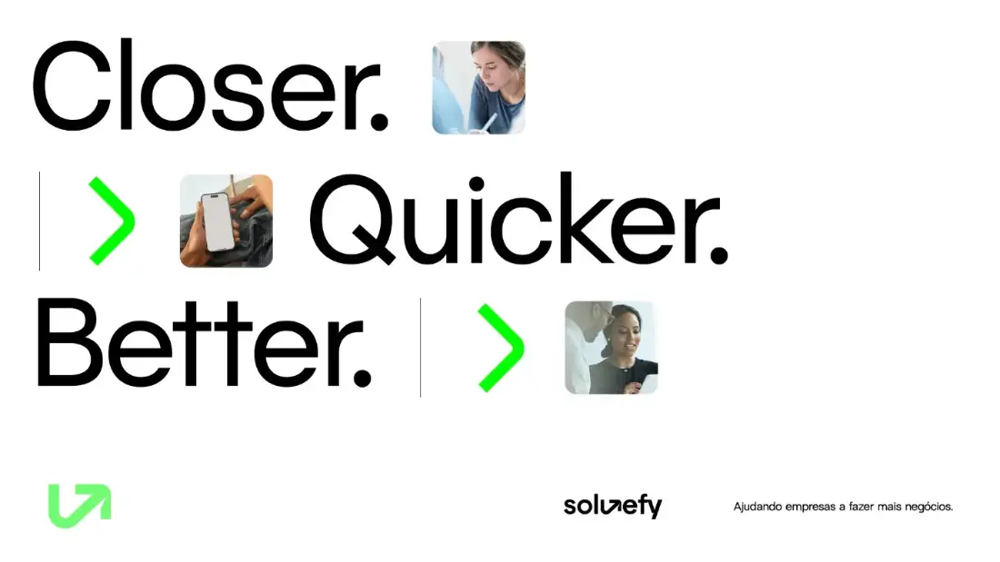
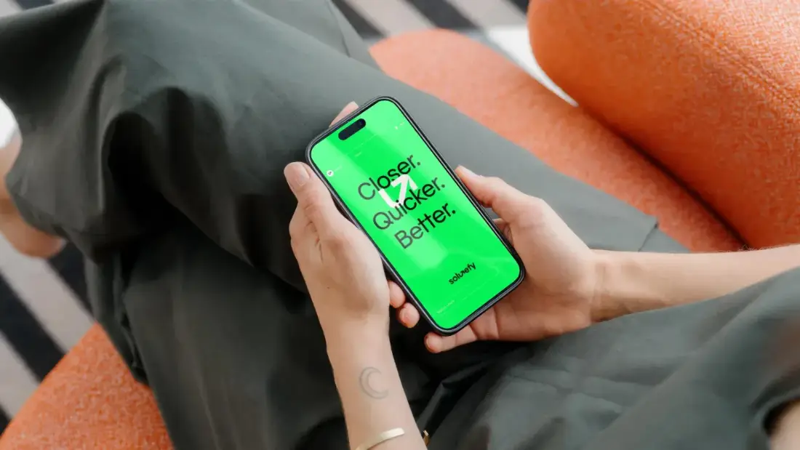
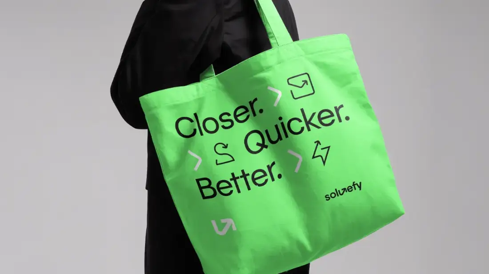
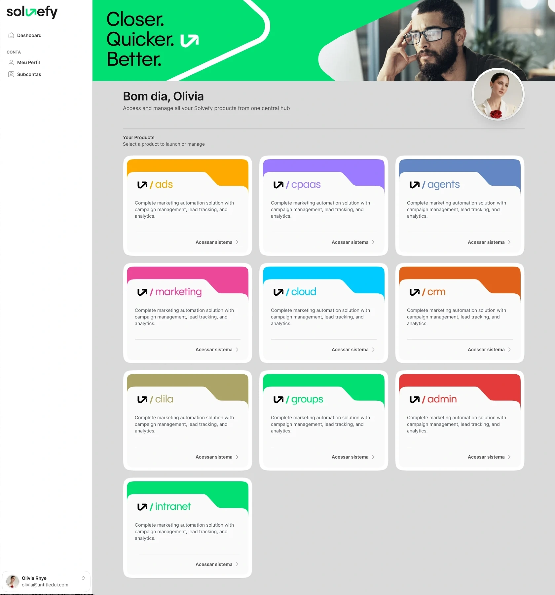
16 de maio. Uma marca e uma história, ditas em voz alta para a empresa inteira e para o mercado no mesmo dia.
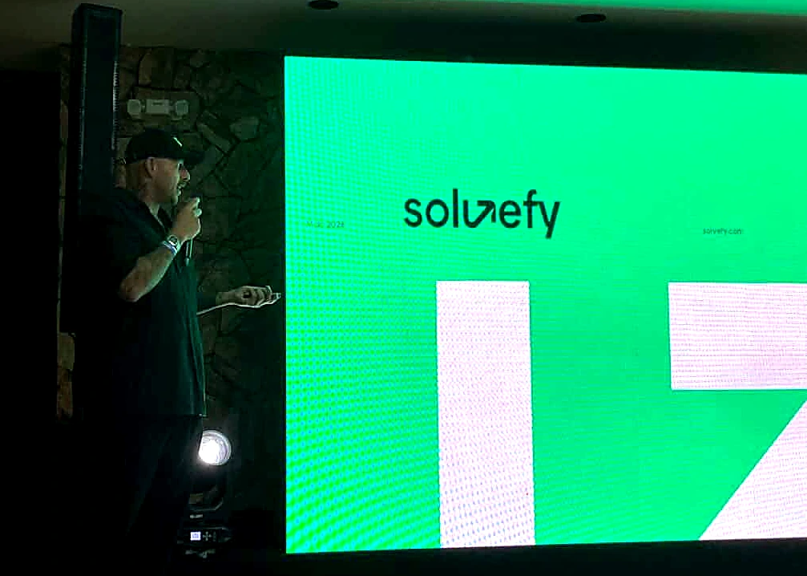
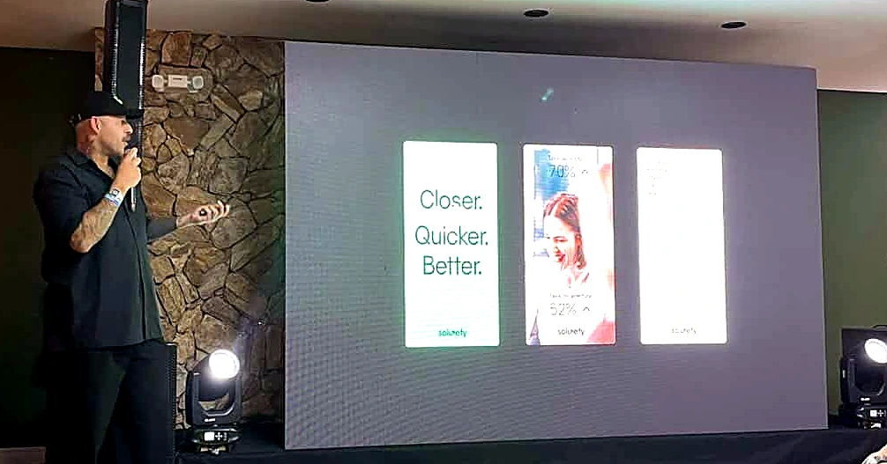
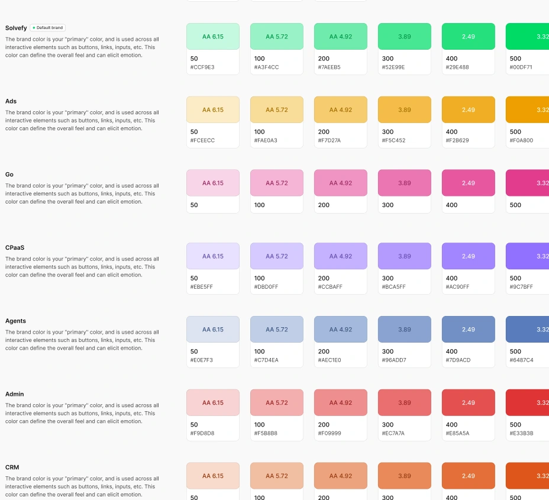
Telas B2B densas, em que a densidade é o objetivo. Toda superfície roda no sistema compartilhado: mesma escala de espaçamento, mesmos estados, mesma palavra para a mesma ação.
As regras de texto vieram junto com os componentes. Imperativo nas ações, concreto antes de abstrato, maiúscula só no início da frase.
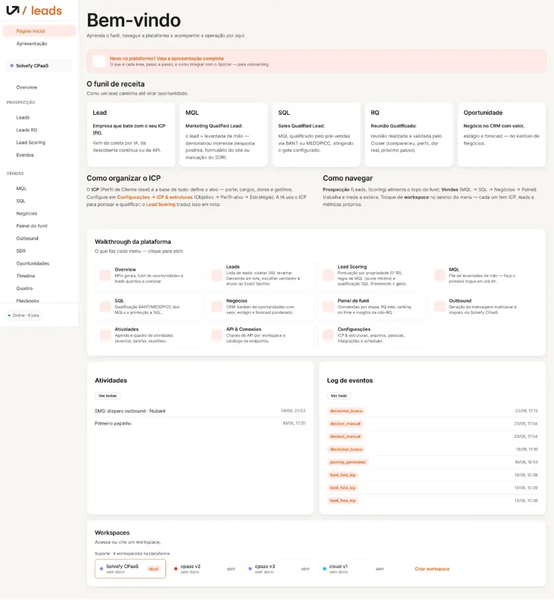
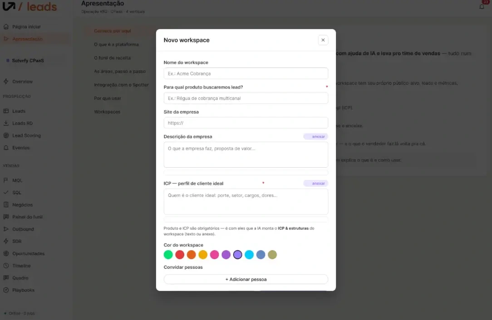
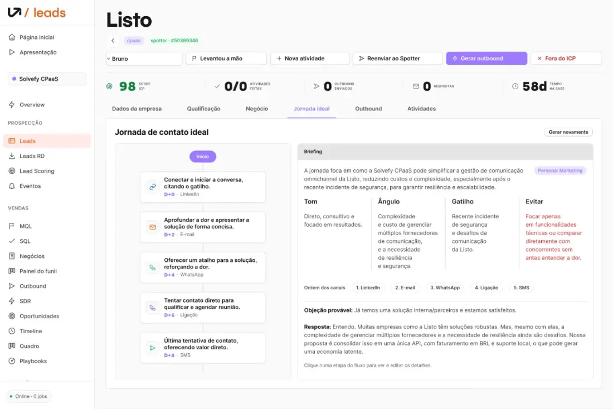
Rodei meu próprio processo com Claude Code, MCPs e agentes customizados. Em paralelo, a empresa lançou o Agents, seu produto de orquestração de IA, sobre o mesmo sistema de todas as outras superfícies.
A diferença que importa: IA como algo com que o time constrói todo dia, não uma linha num deck.
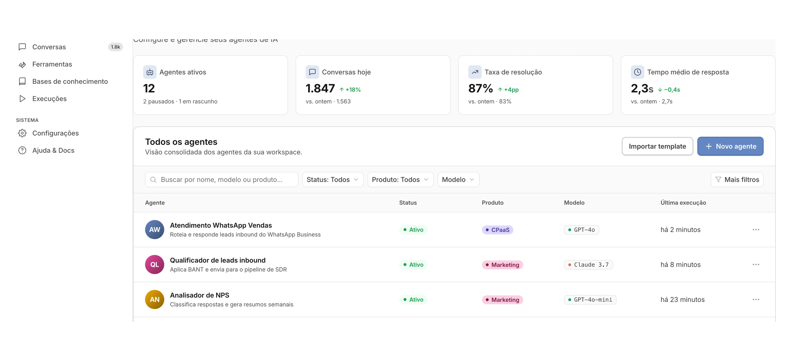
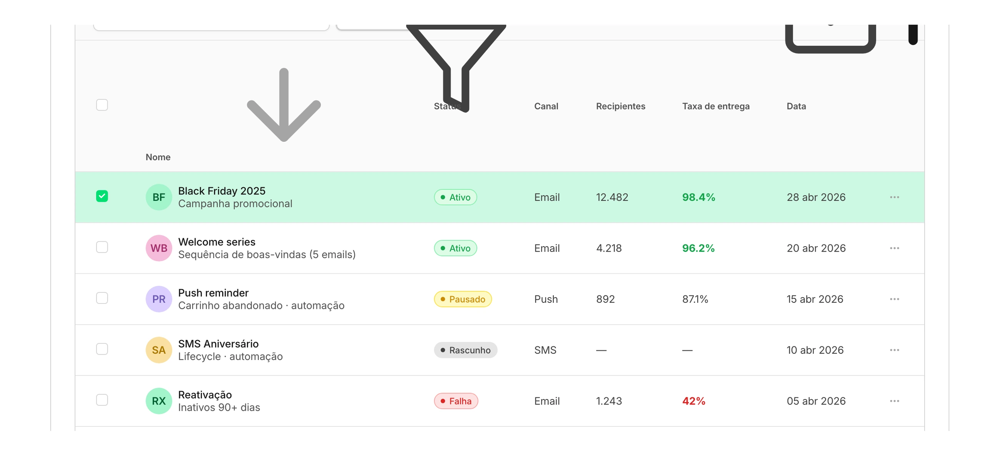
Medido contra a linha de base que definimos antes de o design começar. Quatro números, e uma mudança que não tem número.
A versão de mim que começou este projeto teria entregado o rebrand que foi pedido. A versão que terminou trata o briefing como hipótese.